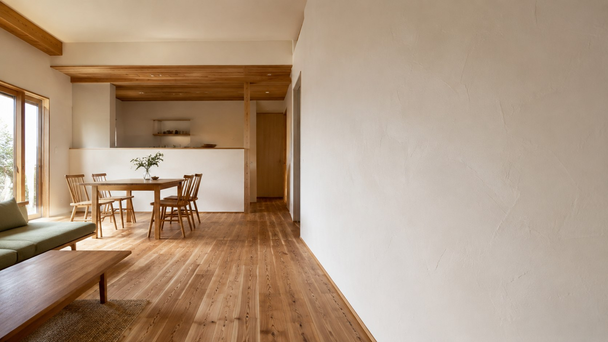
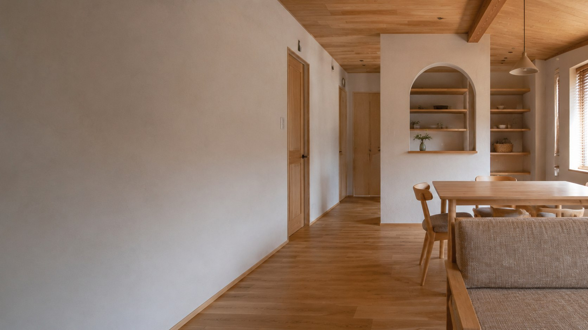

FUJISOU AINOS / OPEN HOUSE
完成見学会
写真の先にある、
住み心地に出会う。
木の手触り、光の入り方、部屋から部屋へのつながり。
これからの暮らしを、実際の住まいで考えてみませんか。

INFORMATION
開催概要
開催日・会場は、詳細が決まり次第ご案内します。
開催情報のご案内準備中
- 開催日
- 決まり次第掲載します
- 開催時間
- 決まり次第掲載します
- 会場
- 会場情報は後日ご案内します
- 見学方法
- 予約方法・受付開始日は後日ご案内します
- お問い合わせ
- 0800-200-2661受付 9:00–18:00 / 水曜・木曜定休
このページは公開前の準備用ページです。開催情報を確認してからご来場ください。
SEE. TOUCH. IMAGINE.
図面だけでは、
分からないこと。
家を建てる前に、自分の感覚で確かめる時間を。
- 01
素材の表情を、近くで見る。
床や壁の手触り、木の色合い、光によって変わる表情。画面越しでは伝わらない質感をご覧ください。
- 02
毎日の動きを、歩いてみる。
玄関から室内へ、キッチンから食卓へ。ご家族の日常を思い浮かべながら、空間のつながりを確認できます。
- 03
気になることを、その場で聞く。
間取り、素材、性能、予算の考え方。写真や資料を見て疑問に思ったことも、気軽にご相談ください。

YOUR NEXT CHAPTER
ここで暮らすなら、
どんな毎日になるだろう。
QUESTIONS
見学前に、
気になること。
まだ土地や予算が決まっていなくても相談できますか？
はい。今のご希望やお悩みをお聞かせください。家づくりを考え始めた段階のご相談も受け付けています。
子どもと一緒に参加できますか？
ご参加人数とお子さまの年齢をお問い合わせ時にお伝えください。会場ごとのご案内や注意事項をお知らせします。
駐車場や会場の場所はどこで確認できますか？
会場が決まり次第、アクセス方法をご案内します。掲載前はお電話またはLINEでお問い合わせください。
当日の見学や写真撮影はできますか？
受付状況と会場によって異なります。ご来場・撮影の前に必ずスタッフへご確認ください。
LET'S TALK
まずは、見学のことから。
開催予定や参加方法について、
ご都合のよい方法でお問い合わせください。